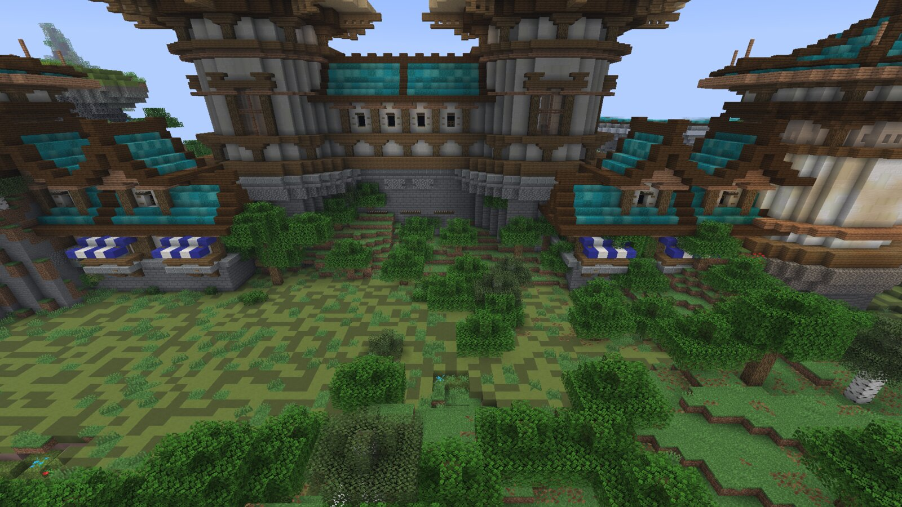
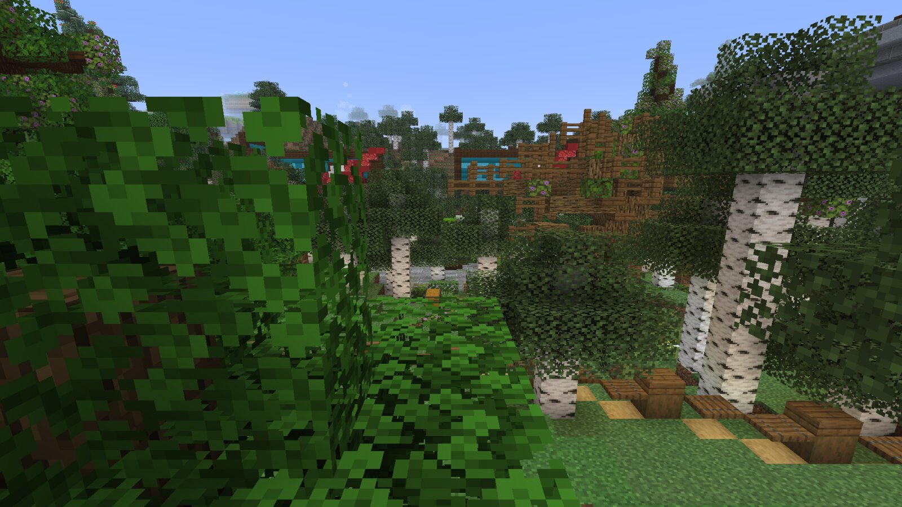
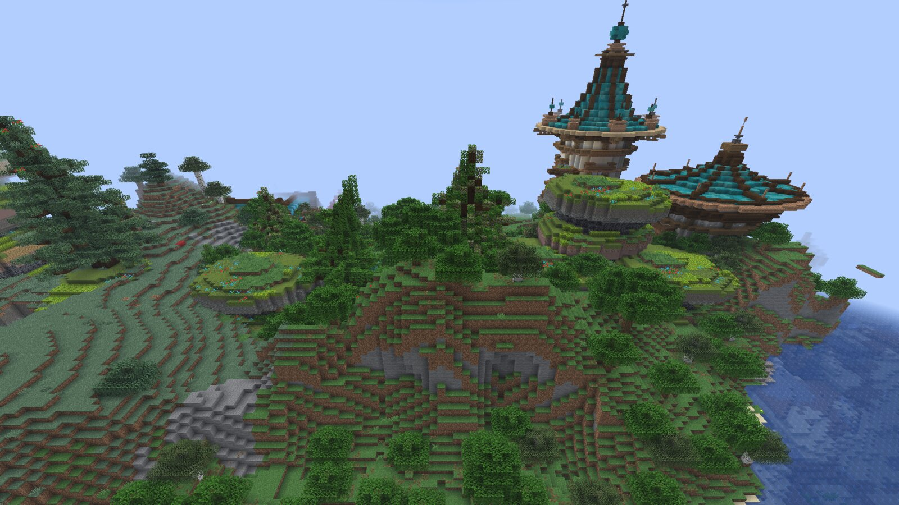

EMBERSTEAD
Emberstead is a vanilla survival server that runs for one season and then shuts down. Thirty days, one shared world, no resets.
What is Emberstead?
Most survival servers either reset every few months or run the same world forever. Emberstead does neither. The world opens September 25, runs for one season, and closes for good on October 25. When it's over, it's over.
Mostly vanilla
No teleports, no kits, no land claims, no shops. Keep inventory is off, so dying costs you whatever you were carrying.
Java and Bedrock, same world
Java Edition and Bedrock players share one world, so PC, console, and mobile can all play together.
A village to start from
Spawn is a small medieval village built into the hills. There's a market square and a few houses to start from before you head out on your own.
Room to roam
The world border sits at 10,000 blocks. Big enough to spread out, small enough that you'll actually run into people.
How the season runs
The season runs thirty days. There's something on most weekends, and it ends with a tournament.
Season One begins at 6:00 PM PT. First night in a fresh world.
Every Saturday at the market square in the spawn village. Open a stall, sell your extras, haggle.
Duels at the lakeside arena every Sunday. Sign-up board is by the gate.
Two days of tournament brackets to end the season. Details get posted the week before.
The server shuts down at 11:59 PM PT. The world doesn't come back.
From the world
A few shots of the spawn village to start. Season screenshots get posted here as it runs - check back after event nights.





Short list. Enforced.
- Spawn is the only safe zone. Outside spawn, griefing, stealing, and raiding are fair game. Hide your stuff or lose it.
- Zero tolerance for cheating. Hacked clients, x-ray, macros, auras - confirmed cheating is a ban. No strikes.
- Item duplication is banned. The usual exceptions stand: TNT, rail, and carpet dupers are fine.
- No land claims. The world is open. Build smart, hide well, and make friends you can trust.
- Keep inventory is off. Death matters. Play like it.
- No monetization, ever. No ranks, no crates, no store. Nobody can buy an advantage here.
Be there when the gates open
Add the server now so you're ready on opening night. Whitelist-free - if you can connect, you can play.
emberstead.cloud-ip.cc
bedrock.emberstead.cloud-ip.cc : 30246
Bedrock players: use the address above with port 30246.
Follow the season
Event announcements, results, and the best moments from the world.